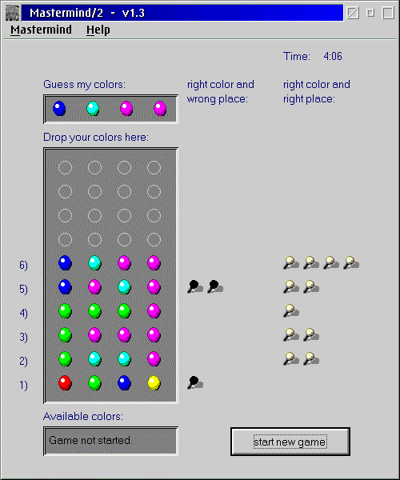
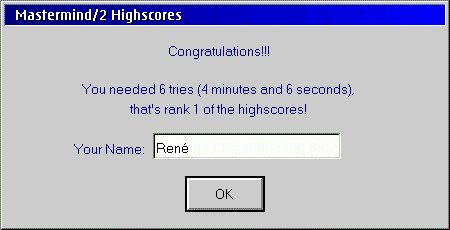

Welcome to Mastermind/2
last update: 12th January 2000
Welcome to Mastermind/2last update: 12th January 2000
Contents of this page: |
Download:The latest release of Mastermind/2 is version 1.4a. For a list of changes please take a look at the news-page. Mastermind/2 v1.4a is available only for OS/2 Warp or higher. It was tested with Warp 4 FP9 and FP10 but should work with all other versions, too. Beginning with v1.4 you need to download the base-package and at least one language package. Download v1.4a base-package by clicking here (51.636 Bytes, released 17. Apr 1999).
|
|
Screenshots of Mastermind/2:A typical game may look like this:  Beginning with v1.4 you can choose your own set of six pins:
If you were good enough, you can enter your name into the highscores:  |
How to translate Mastermind/2:If you would like to play Mastermind/2 in your native language and the right language module is missing at the moment, why not translating it? This is very easy and all you need is some knowledge of english and a simple text-editor (I recommend OS/2's enhanced editor "epm"). I made a zip-file (25.912 Byte) for you, that contains
You can now download this zip-file (25.912 Byte), read the contained file translte.txt and then start translating the three text-files from english into your language. Then send back these three translated files (after you made a zip-file out of them, please) by email. That's all. Easy, isn't it? So you see: there is no reason to wait if your native language is not supported yet. |
Postcards:If you are interested in viewing some postcards I got from all over the world, you may follow this link. Please note that the page containing the images is about 180 kBytes. It seems that a colleague of mine doesn't really know what postcards are :-) He gave me this: This is yoghurt (it's loved by lots of kids in germany and by my colleague) and you can translate it's name with "fruit-dwarf" :-) Ok, if I would tell you the truth I'd say that he knows what a postcard is because he gave me this yoghurt in addition to a postcard. After I ate the yoghurt I had enough power to make v1.4 :-) |
Source code:
I agree to these terms and conditions and would like to download the source code (412.251 Bytes). I agree to these terms and conditions and would like to download the updated file main.c (23.308 Bytes). Please note that you will need both for the complete actual source-code. Replace the main.c from mmind14-source.zip with the version from main-c.zip. If you already have the source-code fo v1.4 you only need main-c.zip
I hope I could help someone by releasing the source. My reasons for doing this are described in this article from Ulrich Möller in OS/2-ezine. I encourage you to do the same with your source codes because this will help OS/2 a lot! |
This page has been tested with Netscape Communicator 4.61 and 4.04 for OS/2 Warp and Netscape 2.02 for OS/2 Warp. For optimal results you should use Netscape Communicator 4.61 for OS/2. HTML written by hand. For comments please write to r.auberger@gmx.net. |
|

![[Blue Ribbon Campaign icon]](http://br.eff.org/br.gif)